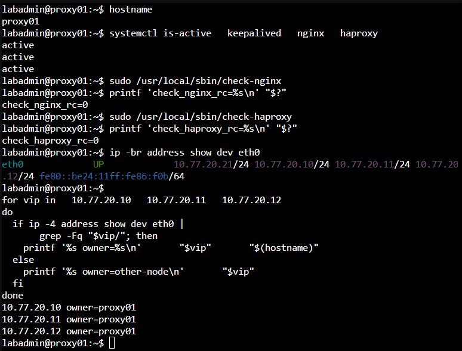
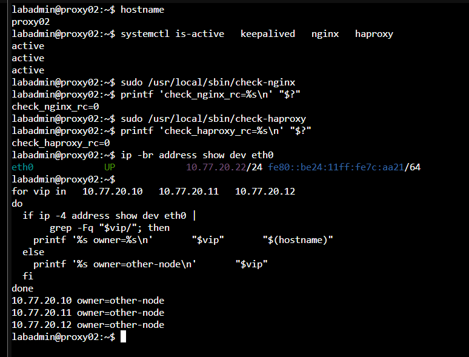
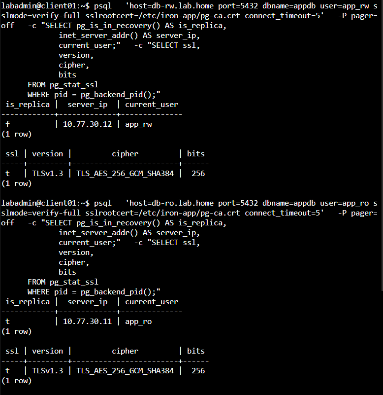
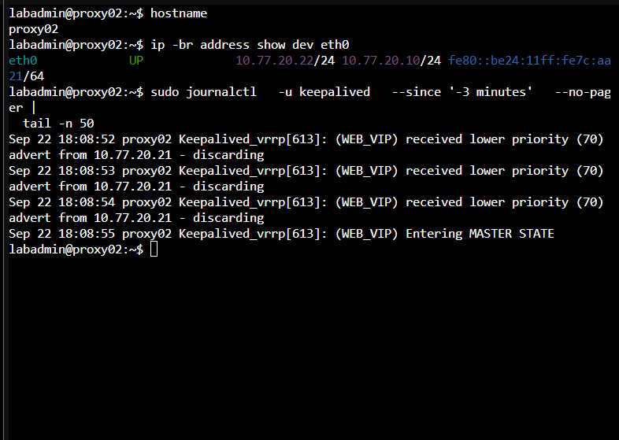
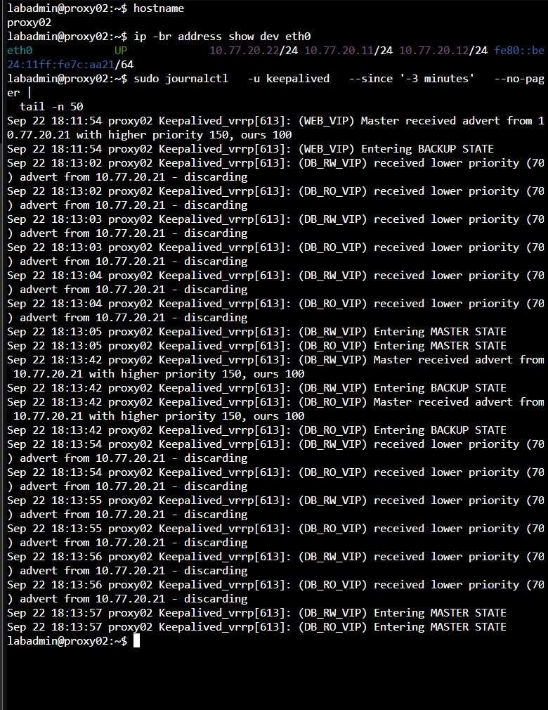
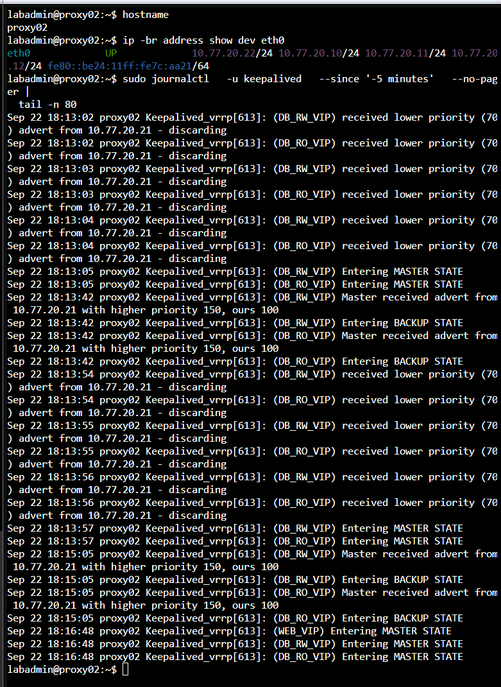

Day 26｜讓代理節點故障後自動接管：Keepalived、VRRP 與三組高可用 VIP
對應文章：Day 26｜讓代理節點故障後自動接管：Keepalived、VRRP 與三組高可用 VIP
本日由 proxy01／02 提供三組獨立 VIP：Web 10.77.20.10、DB RW 10.77.20.11、DB RO 10.77.20.12。VIP 不配置在 OPNsense。
本日操作順序
- 先在 proxy01、proxy02 分別確認實際 Service NIC 名稱與 Nginx、HAProxy 健康狀態。
- 逐台建立 Health Script，先手動執行並確認 Exit Code。
- 先完成 proxy01 的 Keepalived Config，但先不要測試故障。
- 再完成 proxy02 的 Config，確認 VRID、Priority 與 Peer Address 和 proxy01 相符。
- 先啟動較高 Priority 的 proxy01，確認它成為 Master 後再啟動 proxy02，建立容易判讀的初始狀態；實際 HA 運作不依賴此啟動順序。
- 從 client01 分別測試三組 VIP，最後才到 OPNsense 啟用正式需要的規則。
1. 前置確認
操作節點：proxy01、proxy02。逐台確認，不要假設兩台 NIC 都叫 eth0。
先在 proxy01 執行並確認，再到 proxy02 重複：
sudo apt update
sudo apt install -y keepalived
ip -br address
sudo sysctl net.ipv4.ip_nonlocal_bind
sudo nginx -t
sudo haproxy -c -f /etc/haproxy/haproxy.cfg
以下假設 Service NIC 是 eth0。若 ip -br address 顯示其他名稱，兩台 Keepalived Config 都要改成實際名稱。
2. 建立 Health Script
操作節點：proxy01、proxy02。check-haproxy 兩台相同，但 check-nginx 必須檢查各自的 Node IP；不能兩台都指向 proxy01。
proxy01 的 /usr/local/sbin/check-nginx：
sudo nano /usr/local/sbin/check-nginx
#!/bin/sh
systemctl is-active --quiet nginx && curl -fsS --max-time 2 http://10.77.20.21/health >/dev/null
在 proxy01 按 Ctrl+O、Enter、Ctrl+X 儲存。
proxy02 的 /usr/local/sbin/check-nginx 使用以下完整內容：
sudo nano /usr/local/sbin/check-nginx
#!/bin/sh
systemctl is-active --quiet nginx && curl -fsS --max-time 2 http://10.77.20.22/health >/dev/null
在 proxy02 按 Ctrl+O、Enter、Ctrl+X 儲存。特別確認 proxy01 是 .21，proxy02 是 .22。如果 proxy02 也檢查 .21，當 proxy01 Nginx 停止時，兩台的 chk_nginx 會一起失敗，Web VIP 就無法正確切換。
接著在兩台開啟 /usr/local/sbin/check-haproxy：
sudo nano /usr/local/sbin/check-haproxy
#!/bin/sh
systemctl is-active --quiet haproxy && \
printf 'show info\n' | \
socat -T 2 stdio UNIX-CONNECT:/run/haproxy/admin.sock | \
grep -q '^Stopping: 0'
HAProxy 3.0 的 show info 輸出可能不包含 Status: READY；這裡改查實際存在的 Stopping: 0。因此此 Script 同時確認 systemd 服務為 Active、Runtime Socket 能回應，而且 HAProxy 程序未進入停止狀態；Listener、後端與資料庫角色由後續連線測試確認。
兩台都按 Ctrl+O、Enter、Ctrl+X 儲存，再執行：
sudo chown root:root /usr/local/sbin/check-nginx /usr/local/sbin/check-haproxy
sudo chmod 750 /usr/local/sbin/check-nginx /usr/local/sbin/check-haproxy
sudo /usr/local/sbin/check-nginx
echo $?
sudo /usr/local/sbin/check-haproxy
echo $?
sudo grep -n 'http://' /usr/local/sbin/check-nginx
兩個 Script 的 Exit Code 都必須是 0。最後一個指令在 proxy01 必須顯示 10.77.20.21，在 proxy02 必須顯示 10.77.20.22。Exit Code 為非零時，先檢查 Nginx、HAProxy 與腳本內的 Own-IP，確認正常後再啟動 Keepalived。
3. proxy01 Keepalived Config
操作節點：只在 proxy01。
建立 /etc/keepalived/keepalived.conf：
sudo cp -a /etc/keepalived/keepalived.conf \
/etc/keepalived/keepalived.conf.before-day26 2>/dev/null || true
sudo nano /etc/keepalived/keepalived.conf
global_defs {
router_id PROXY01
enable_script_security
script_user root
}
vrrp_script chk_nginx {
script "/usr/local/sbin/check-nginx"
interval 2
timeout 2
fall 2
rise 2
weight -80
}
vrrp_script chk_haproxy {
script "/usr/local/sbin/check-haproxy"
interval 2
timeout 2
fall 2
rise 2
weight -80
}
vrrp_instance WEB_VIP {
state BACKUP
interface eth0
virtual_router_id 20
priority 150
advert_int 1
unicast_src_ip 10.77.20.21
unicast_peer { 10.77.20.22 }
authentication {
auth_type PASS
auth_pass IR0N2026
}
virtual_ipaddress { 10.77.20.10/24 dev eth0 }
track_script { chk_nginx }
}
vrrp_instance DB_RW_VIP {
state BACKUP
interface eth0
virtual_router_id 21
priority 150
advert_int 1
unicast_src_ip 10.77.20.21
unicast_peer { 10.77.20.22 }
authentication {
auth_type PASS
auth_pass IR0N2026
}
virtual_ipaddress { 10.77.20.11/24 dev eth0 }
track_script { chk_haproxy }
}
vrrp_instance DB_RO_VIP {
state BACKUP
interface eth0
virtual_router_id 22
priority 150
advert_int 1
unicast_src_ip 10.77.20.21
unicast_peer { 10.77.20.22 }
authentication {
auth_type PASS
auth_pass IR0N2026
}
virtual_ipaddress { 10.77.20.12/24 dev eth0 }
track_script { chk_haproxy }
}
按 Ctrl+O、Enter、Ctrl+X 儲存，但先不啟動 Keepalived。先驗證這份設定：
sudo keepalived --config-test \
--use-file=/etc/keepalived/keepalived.conf
Config Test 必須成功。若出現 NIC 不存在，回到第 1 節，把設定中的 eth0 全部改成 proxy01 的實際 Service NIC 名稱。
auth_pass 主要用來降低誤配置風險；正式環境要限制 VRRP Peer 與網路存取，建立完整的安全邊界。
4. proxy02 Config
操作節點：只在 proxy02。完成後先做 Config Check。
先備份原始設定，再開啟 Config：
sudo cp -a /etc/keepalived/keepalived.conf \
/etc/keepalived/keepalived.conf.before-day26 2>/dev/null || true
sudo nano /etc/keepalived/keepalived.conf
將下列完整設定貼入：
global_defs {
router_id PROXY02
enable_script_security
script_user root
}
vrrp_script chk_nginx {
script "/usr/local/sbin/check-nginx"
interval 2
timeout 2
fall 2
rise 2
weight -80
}
vrrp_script chk_haproxy {
script "/usr/local/sbin/check-haproxy"
interval 2
timeout 2
fall 2
rise 2
weight -80
}
vrrp_instance WEB_VIP {
state BACKUP
interface eth0
virtual_router_id 20
priority 100
advert_int 1
unicast_src_ip 10.77.20.22
unicast_peer { 10.77.20.21 }
authentication {
auth_type PASS
auth_pass IR0N2026
}
virtual_ipaddress { 10.77.20.10/24 dev eth0 }
track_script { chk_nginx }
}
vrrp_instance DB_RW_VIP {
state BACKUP
interface eth0
virtual_router_id 21
priority 100
advert_int 1
unicast_src_ip 10.77.20.22
unicast_peer { 10.77.20.21 }
authentication {
auth_type PASS
auth_pass IR0N2026
}
virtual_ipaddress { 10.77.20.11/24 dev eth0 }
track_script { chk_haproxy }
}
vrrp_instance DB_RO_VIP {
state BACKUP
interface eth0
virtual_router_id 22
priority 100
advert_int 1
unicast_src_ip 10.77.20.22
unicast_peer { 10.77.20.21 }
authentication {
auth_type PASS
auth_pass IR0N2026
}
virtual_ipaddress { 10.77.20.12/24 dev eth0 }
track_script { chk_haproxy }
}
按 Ctrl+O、Enter、Ctrl+X 儲存，再檢查 proxy02 的節點專屬欄位並執行 Config Test：
sudo grep -nE 'router_id|priority|unicast_src_ip|unicast_peer' \
/etc/keepalived/keepalived.conf
sudo keepalived --config-test \
--use-file=/etc/keepalived/keepalived.conf
Config Test 必須成功。若出現 NIC 不存在，回到第 1 節，把 eth0 改成 proxy02 的實際 Service NIC 名稱。
5. 啟動與確認
以下使用固定的驗證順序：先啟動 proxy01，等三組 VIP 都出現後，再啟動 proxy02。這個順序能避開初始選舉的短暫過渡；Keepalived 完成收斂後的角色由 VRRP 選舉結果決定。
先在 proxy01 執行：
sudo keepalived --config-test \
--use-file=/etc/keepalived/keepalived.conf
sudo systemctl enable --now keepalived
sleep 5
systemctl is-active nginx haproxy keepalived
ip -br address show eth0
確認 proxy01 已持有 10.77.20.10、10.77.20.11、10.77.20.12 三組 VIP，再到 proxy02 執行：
sudo keepalived --config-test \
--use-file=/etc/keepalived/keepalived.conf
sudo systemctl enable --now keepalived
sleep 5
systemctl is-active nginx haproxy keepalived
ip -br address show eth0
sleep 5 是讓 VRRP 完成初始選舉與收斂；不要在服務剛啟動後立即判斷 VIP 所屬。若先啟動 proxy02，它在尚未收到 proxy01 Advertisement 時會暫時成為 Master；proxy01 上線後，proxy02 收到 Priority 150 的 Advertisement 就會自動退回 BACKUP。
之後主機自動重啟不需要人工控制順序：
- 只有 proxy02 重啟：proxy01 持續為 Master，proxy02 回來後留在 BACKUP。
- proxy01 重啟：proxy02 先接手 VIP；proxy01 回來後依 Priority 150 進行 Preempt，VIP 回到 proxy01。
- 兩台同時重啟：VRRP 會自行選舉，最後由健康且 Priority 較高的節點持有 VIP。
正常收斂後，proxy01 持有三組 VIP，proxy02 不持有。
在 proxy01 執行：
systemctl is-active nginx haproxy keepalived
ip -4 -o address show dev eth0 |
awk '$4 ~ /^10\.77\.20\.(10|11|12)\/24$/'
預期三個 Service 都是 active，並看到三組 VIP。在 proxy02 執行：
systemctl is-active nginx haproxy keepalived
if ip -4 -o address show dev eth0 |
awk '$4 ~ /^10\.77\.20\.(10|11|12)\/24$/' |
grep -q .; then
echo 'ERROR: proxy02 still owns one or more VIPs'
else
echo 'OK: proxy02 does not own VIP'
fi
正常基準下 proxy02 不應出現三組 VIP。如果啟動或重啟後的短暫選舉期曾在兩台看到 VIP，先等待 5 至 10 秒並檢查 Keepalived Log。收斂後兩台同時持有同一組 VIP，表示發生持續性 split-brain；此時停止 proxy02 Keepalived，檢查 VRID、Unicast Peer、NIC 與兩台之間的 VRRP Protocol 112，修正後再繼續測試 Client。

圖（一）正常收斂後，proxy01 的服務與健康腳本皆正常，並持有三組 VIP

圖（二）proxy02 的服務與健康腳本皆正常，穩定狀態下未持有 VIP
client01：
sudo apt update
sudo apt install -y curl netcat-openbsd postgresql-client tcpdump
curl http://10.77.20.10/health
nc -vz 10.77.20.11 5432
nc -vz 10.77.20.12 5432
三個服務入口都應成功。接著確認 OPNsense Unbound 是否已建立 Host Override；尚未建立時依下列步驟新增：
登入 OPNsense Web UI。
選
Services→Unbound DNS→Overrides。在
Host Overrides按Add。依下表逐筆建立，Type 都選
A (IPv4 address)：Host Domain IP Address Description 最終 FQDN weblab.home10.77.20.10Web VIPweb.lab.homedb-rwlab.home10.77.20.11DB RW VIPdb-rw.lab.homedb-rolab.home10.77.20.12DB RO VIPdb-ro.lab.home每筆按
Save，三筆都完成後按頁面上方Apply。確認清單中的 Host 分別是
web、db-rw、db-ro，三筆 Domain 都是lab.home。回到 client01 重做三次
getent ahostsv4。
OPNsense 會將 Host 與 Domain 組合成 FQDN。不要把 db-rw.lab.home 或 db-ro.lab.home 整串填入 Domain，也不要在這兩筆繼續使用 Host web；否則會產生 web.db-rw.lab.home 或 web.db-ro.lab.home 這類錯誤名稱。
確認 DNS 指向三組 VIP：
getent ahostsv4 web.lab.home
getent ahostsv4 db-rw.lab.home
getent ahostsv4 db-ro.lab.home
6. 將 Root CA 安裝到測試節點
操作位置：先在 ca01 PVE Console 取得 Public Root Certificate，再到 app01、app02、client01 安裝。Root Certificate 可以公開，但 Private Key 絕對不能複製離開 ca01。
在 ca01 顯示 Root Certificate 與 Fingerprint：
sudo cat /var/lib/step-ca/certs/root_ca.crt
sudo openssl x509 -in /var/lib/step-ca/certs/root_ca.crt \
-noout -fingerprint -sha256
記錄完整 PEM 與 SHA256 Fingerprint。到 app01 執行：
sudo install -d -m 0755 /etc/iron-app
sudo nano /etc/iron-app/pg-ca.crt
貼上從 -----BEGIN CERTIFICATE----- 到 -----END CERTIFICATE----- 的完整內容，按 Ctrl+O、Enter、Ctrl+X。再執行：
sudo chown root:root /etc/iron-app/pg-ca.crt
sudo chmod 644 /etc/iron-app/pg-ca.crt
sudo openssl x509 -in /etc/iron-app/pg-ca.crt \
-noout -fingerprint -sha256
Fingerprint 必須與 ca01 相同。在 app02 重複相同操作。
到 client01 建立相同路徑：
sudo install -d -m 0755 /etc/iron-app
sudo nano /etc/iron-app/pg-ca.crt
貼上同一份 Public Root Certificate，儲存後執行：
sudo chown root:root /etc/iron-app/pg-ca.crt
sudo chmod 644 /etc/iron-app/pg-ca.crt
sudo openssl x509 -in /etc/iron-app/pg-ca.crt \
-noout -fingerprint -sha256
app01、app02、client01 顯示的 Fingerprint 都必須與 ca01 相同。
持續探測需要在背景連線兩組資料庫入口，因此在 client01 建立僅供目前使用者讀取的密碼檔：
(
umask 077
nano /home/labadmin/.pgpass
)
填入以下兩行，分別換成 app_rw 與 app_ro 的實際密碼：
db-rw.lab.home:5432:appdb:app_rw:實際app_rw密碼
db-ro.lab.home:5432:appdb:app_ro:實際app_ro密碼
密碼包含冒號 : 或反斜線 \ 時，必須在該字元前加上反斜線進行跳脫。
儲存後立即限制權限：
chmod 600 /home/labadmin/.pgpass
stat -c '%U %G %a %n' /home/labadmin/.pgpass
結果必須顯示擁有者為 labadmin、權限為 600。密碼檔只保存在 client01，不顯示內容、不複製到其他節點，也不提交到 Git。
最後在 client01 先各做一次 TLS 連線，確認進入持續 Probe 前沒有 DNS、憑證、密碼或 HBA 問題：
psql \
'host=db-rw.lab.home port=5432 dbname=appdb user=app_rw sslmode=verify-full sslrootcert=/etc/iron-app/pg-ca.crt connect_timeout=3' \
-w \
-Atqc 'SELECT pg_is_in_recovery(),inet_server_addr();'
psql \
'host=db-ro.lab.home port=5432 dbname=appdb user=app_ro sslmode=verify-full sslrootcert=/etc/iron-app/pg-ca.crt connect_timeout=3' \
-w \
-Atqc 'SELECT pg_is_in_recovery(),inet_server_addr();'
RW 預期第一欄為 f，RO 預期為 t。

圖（三）DB-RW 抵達 Primary、DB-RO 抵達 Replica，兩條連線都通過完整 TLS 驗證
7. 分開測試三組 VIP
操作節點：從 client01 發起測試。切換時只停止一項服務，驗證完立即恢復。
開始前在 client01 安裝 tmux，並在目前這一個 SSH／Console Connection 內建立名為 day26 的 Session：
sudo apt update
sudo apt install -y tmux
tmux new-session -s day26
進入 tmux 後，在目前 Pane 依序執行下列指令，將同一個 Window 分成左邊一個、右邊上下各一個，共三個 Pane：
tmux split-window -h
tmux split-window -v
第一條指令建立右側 Pane，tmux 會自動將焦點移到新 Pane；第二條指令因此會將右側 Pane 分成上下兩個。之後按 Ctrl+B，放開後按方向鍵，即可在三個 Pane 間切換。
在第一個 Pane 持續測 Web VIP：
while true; do
printf '%s web ' "$(date -Is)"
curl -sS --connect-timeout 2 http://10.77.20.10/health || echo 'failed'
sleep 1
done
在第二個 Pane 持續測 DB RW VIP：
while true; do
printf '%s rw ' "$(date -Is)"
psql \
'host=db-rw.lab.home port=5432 dbname=appdb user=app_rw sslmode=verify-full sslrootcert=/etc/iron-app/pg-ca.crt connect_timeout=2' \
-w \
-Atqc 'SELECT pg_is_in_recovery(),inet_server_addr();' || echo 'failed'
sleep 1
done
在第三個 Pane 持續測 DB RO VIP：
while true; do
printf '%s ro ' "$(date -Is)"
psql \
'host=db-ro.lab.home port=5432 dbname=appdb user=app_ro sslmode=verify-full sslrootcert=/etc/iron-app/pg-ca.crt connect_timeout=2' \
-w \
-Atqc 'SELECT pg_is_in_recovery(),inet_server_addr();' || echo 'failed'
sleep 1
done
不要顯示或提交 .pgpass；正式環境應改由祕密儲存服務提供資料庫憑證。
tmux 的離開與結束方式不同：
- 只是暫時離開、讓三個 Probe 繼續執行：按
Ctrl+B，放開後按d。 - 回到原本 Session：在 client01 執行
tmux attach-session -t day26。 - 當日測試完成：先到三個 Pane 各按一次
Ctrl+C停止 Probe，再按Ctrl+B、放開後按d回到普通 Shell，最後執行：
tmux kill-session -t day26
tmux list-sessions 2>/dev/null || echo 'No tmux session remains'
若 SSH Connection 意外中斷，tmux 內的 Probe 不會因此停止；重新連入 client01 後用上述 attach-session 取回畫面。
7.1 停止 proxy01 Nginx
在 proxy01：
date -Is
sudo systemctl stop nginx
預期只有 Web VIP 移到 proxy02，DB RW／RO VIP 留在 proxy01。分別在 proxy01 與 proxy02 執行：
ip -br address show eth0
sudo journalctl -u keepalived --since '-2 min' --no-pager

圖（四）proxy02 接管 Web VIP，DB-RW 與 DB-RO VIP 保持在 proxy01
恢復：
sudo systemctl start nginx
sudo nginx -t
systemctl is-active nginx
在兩台重新執行 ip -br address show eth0。等待 Web VIP 回到 proxy01，且第一個 Client Probe 恢復正常後，才做下一項。
7.2 停止 proxy01 HAProxy
在 proxy01：
date -Is
sudo systemctl stop haproxy
預期 DB RW 與 DB RO VIP 移到 proxy02，Web VIP 留在 proxy01。先確認接管結果：

圖（五）proxy02 接管 DB-RW 與 DB-RO VIP，Web VIP 保持在 proxy01
確認後恢復：
sudo systemctl start haproxy
sudo haproxy -c -f /etc/haproxy/haproxy.cfg
systemctl is-active haproxy
在兩台重新執行 ip -br address show eth0。等待 DB RW／RO VIP 回到 proxy01，且兩個 DB Probe 恢復正常後，才做下一項。
7.3 關閉 proxy01 VM
操作位置：PVE Web UI。
- 左側選 VM 201
proxy01。 - 選
Summary，先確認 VM 202proxy02為 Running。 - 按右上角
Shutdown，不要使用Stop。 - 等待 proxy01 顯示 Stopped。
- 回 client01 觀察三個 Probe。
- 到 proxy02 執行
ip -br address show eth0，確認三組 VIP 都在 proxy02。

圖（六）proxy01 關機後，proxy02 成為三組 VRRP 執行個體的 MASTER 並持有全部 VIP
確認接管後恢復正常基準：
- 在 PVE Web UI 選 VM 201 →
Start。 - 等待 Nginx、HAProxy、Keepalived 都為 Active，再確認 VIP 是否依 Priority Preempt 回 proxy01。
每一項都要記錄：執行時間、第一次失敗、第一次恢復、VIP 所在節點與錯誤訊息。不要只記錄 systemctl active。
8. 完成今日可執行的最後設定
操作位置：fw01 的 OPNsense Web UI。規則完成後回到 client01 驗證。
8.1 確認 Web VIP 的目前服務邊界
目前 Web VIP 提供內部 HTTP 服務。外部 HTTPS 入口需要先部署 Web Server Certificate、Nginx listen 443 ssl、WAN TCP 443 Port Forward 與對應的 WAN Pass Rule，再開放網際網路連線。
在 client01 確認目前的服務邊界：
curl -fsS http://web.lab.home/health
nc -vz -w 3 web.lab.home 443
HTTP Health Check 應成功，TCP 443 應顯示目前沒有服務監聽，確認 Web VIP 的內部 HTTP 入口已可使用。
8.2 建立 OpenVPN 到 DB VIP 的規則
本系列使用 OpenVPN Interface Group 接收所有 OpenVPN Tunnel Traffic。以下規則的 Interface 都選 OpenVPN，不選 WAN、LAB_INTERNAL 或個別 ovpns Device。
8.2.1 建立 DB 使用者群組
既有的 vpn-rw01、vpn-ro01 帳號已具備個人 Client Certificate。現在建立對應的 DB 群組：
- 進入
System→Access→Groups。 - 按
Add，Group Name 填vpn-db-rw，將vpn-rw01加入 Member，Description 填VPN DB read-write users，按Save。 - 再按
Add，Group Name 填vpn-db-ro，將vpn-ro01加入 Member，Description 填VPN DB read-only users，按Save。 - 回到 Users 檢查：
vpn-rw01只屬於vpn-db-rw，vpn-ro01只屬於vpn-db-ro，不要把兩者加入vpn-admin。
8.2.2 建立 OpenVPN Group 動態 Alias
- 進入
Firewall→Aliases，按Add。 - Name 填
VPN_DB_RW_CLIENTS。 - Type 選
OpenVPN group。 - Content 選／填
vpn-db-rw。 - Description 填
Connected OpenVPN members of vpn-db-rw，按Save。 - 再建立
VPN_DB_RO_CLIENTS，Type 同樣選OpenVPN group，Content 選／填vpn-db-ro，Description 填Connected OpenVPN members of vpn-db-ro。 - 按
Apply。
沒有對應使用者連入 VPN 時，這兩個 Alias 可以是空的，屬於正常現象。
8.2.3 在 OpenVPN Interface 建立三條規則
進入 Firewall → Rules，左上角的 Interface 篩選明確選 OpenVPN。三條規則的 Direction 都選 in、Quick 保持勾選、TCP/IP Version 選 IPv4、Protocol 選 TCP。
第一條是 RW 使用者連 RW VIP：
- Action：
Pass。 - Interface：
OpenVPN。 - Source：Alias
VPN_DB_RW_CLIENTS。 - Destination：Alias
DB_RW_VIP（10.77.20.11）。 - Destination Port：
5432。 - 勾選 Log，Description：
ALLOW_VPN_DB_RW_TO_DB_RW_VIP。 - 按
Save。
第二條明確拒絕 RO 使用者連 RW VIP：
- Action：
Block。 - Interface：
OpenVPN。 - Source：Alias
VPN_DB_RO_CLIENTS。 - Destination：Alias
DB_RW_VIP（10.77.20.11）。 - Destination Port：
5432。 - 勾選 Log，Description：
BLOCK_VPN_DB_RO_TO_DB_RW_VIP。 - 按
Save。
第三條是 RO 使用者連 RO VIP：
- Action：
Pass。 - Interface：
OpenVPN。 - Source：Alias
VPN_DB_RO_CLIENTS。 - Destination：Alias
DB_RO_VIP（10.77.20.12）。 - Destination Port：
5432。 - 勾選 Log，Description：
ALLOW_VPN_DB_RO_TO_DB_RO_VIP。 - 按
Save，先不按Apply，先完成下一節的規則排序。
8.2.4 排列 OpenVPN 規則順序
OPNsense 會依規則順序比對 Traffic。在 Firewall → Rules 選 OpenVPN，使用規則左側的 Move／Anchor 功能調整順序，由上而下應為：
ALLOW_OPENVPN_TO_FIREWALL_DNS
ALLOW_VPN_ADMIN_TO_PVE_WEB
BLOCK_OTHER_OPENVPN_TO_PVE_NODES
ALLOW_VPN_DB_RW_TO_DB_RW_VIP
BLOCK_VPN_DB_RO_TO_DB_RW_VIP
ALLOW_VPN_DB_RO_TO_DB_RO_VIP
BLOCK_OPENVPN_TO_PG_NODES
其他未授權流量由 pf 隱含 Default Deny 拒絕
BLOCK_VPN_DB_RO_TO_DB_RW_VIP 必須位於任何可能允許 RO 使用者存取較寬範圍的 Pass Rule 之上。本系列不建立 OpenVPN network → any Pass；若當前畫面存在自行新增的寬鬆 Pass Rule，先停用或移到所有精確 Block 之下，否則後面的拒絕測試沒有意義。
排序完成後按 Apply，再重新進入 OpenVPN 規則清單，由上往下核對一次。
確認 BLOCK_VPN_DB_RO_TO_DB_RW_VIP 存在，並保留既有的 BLOCK_OPENVPN_TO_PG_NODES。VIP 可用後也要繼續阻擋 PG Node 直連。
DB VIP 不建立 WAN Port Forward。
規則完成後，先使用 vpn-rw01 Profile 連入 OpenVPN，在 Windows PowerShell 執行：
Test-NetConnection db-rw.lab.home -Port 5432
Test-NetConnection db-ro.lab.home -Port 5432
Test-NetConnection 10.77.30.11 -Port 5432
RW VIP 應成功，RO VIP 與 PG Node 直連必須失敗。斷開後改用 vpn-ro01 Profile 連入，執行：
Test-NetConnection db-ro.lab.home -Port 5432
Test-NetConnection db-rw.lab.home -Port 5432
Test-NetConnection 10.77.30.11 -Port 5432
RO VIP 應成功；RW VIP 必須失敗並命中 BLOCK_VPN_DB_RO_TO_DB_RW_VIP；PG Node 直連也必須失敗。
完成兩組測試後，進入 OPNsense Firewall → Log Files → Live View，依 Source Tunnel IP 與 Description 過濾，確認精確 Block Rule 或 Default Deny 留下對應紀錄。連線失敗與阻擋日誌要同時成立，才能判定流量由防火牆拒絕。若結果不符，不要把 Source 暫時放寬成 any，先檢查 VPN 路由、規則順序與命中的規則。
8.3 將 app01、app02 改用 DB RW VIP
操作位置：app01、app02。
sudo nano /etc/iron-app.env
將檔案內容確認為以下四行；DB_PASSWORD 填入為 app_rw 設定的實際密碼，不可刪除或保留範例文字：
DB_HOST=db-rw.lab.home
DB_SSLMODE=verify-full
DB_SSLROOTCERT=/etc/iron-app/pg-ca.crt
DB_PASSWORD=實際app_rw密碼
按 Ctrl+O、Enter、Ctrl+X，再執行：
sudo systemctl restart iron-app
sudo systemctl status iron-app --no-pager
curl -sS http://127.0.0.1:8080/health
curl -i -X POST --connect-timeout 3 \
http://127.0.0.1:8080/write
/write 必須回傳 HTTP 200 與包含 id、backend 的 JSON。若回傳 HTTP 500，立即在同一台 App Node 執行：
sudo journalctl -u iron-app \
--since '-5 min' \
-o cat --no-pager
依最後一段 Python Traceback 修正問題；不要只看 systemctl status，因為它會省略錯誤內容。常見訊息可依下列方向判讀：
在 app01、app02 都完成上述修改，而且兩台本機 /write 都成功後，才從 client01 連續寫入，確認兩個 Backend 經 DB RW VIP 都可使用：
for i in $(seq 1 6); do
curl -sS -X POST --connect-timeout 3 http://web.lab.home/write
echo
done
可以在 app01、app02 做負向測試：
for ip in 10.77.30.11 10.77.30.12 10.77.30.13; do
echo "=== ${ip}:5432 ==="
timeout 3 bash -c "</dev/tcp/${ip}/5432" &&
echo 'ERROR: direct connection unexpectedly reachable' ||
echo 'OK: direct connection blocked'
done
Service VLAN 的 App 與 DB VIP 位於同一 Layer 2 Network，這段流量不會經過 OPNsense；需由 Proxy Host Firewall、HAProxy Authentication Path 與 PostgreSQL Role 控制。